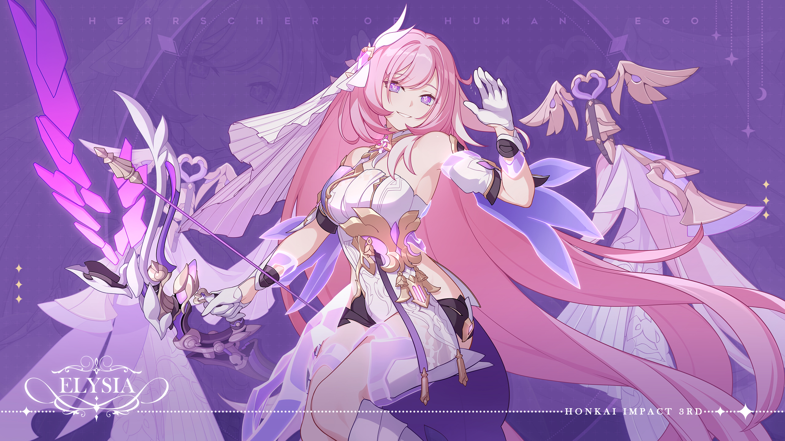
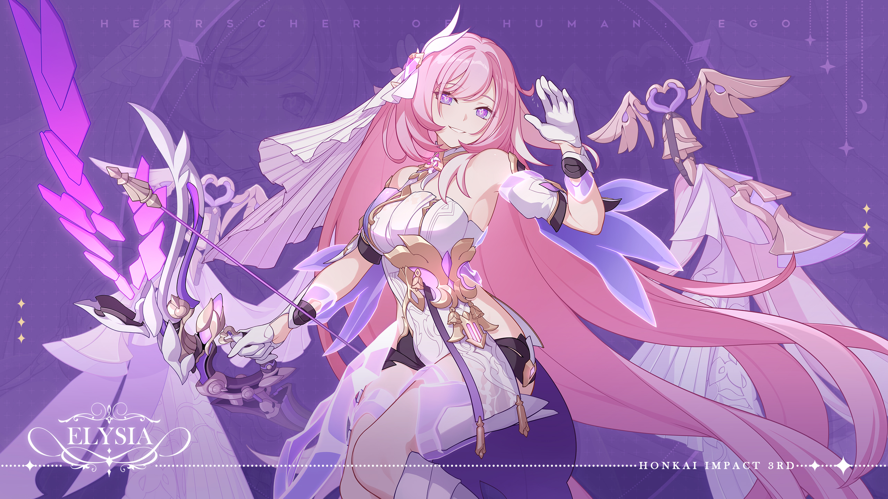

Elysia the best character
Elysia es la sublíder de los Trece Cazallamas. Ocupa el segundo lugar entre los trece. Su nombre en clave es "Ego".
Aparece en el capitulo 25, dando presencia frente a Mei y actúa como su guia por el Reino de Elysian realm. Ella es gentil, amabe, linda, alguien misteriosa, encantadora y todo lo bello de este mundo
Elysia es una dama elegante, alegre y dulce es alguien que "disfruta de todo". Le gusta halagar a Mei por su aspecto y alaba constantemente la belleza de Eden. A Elysia le gusta interactuar con la gente, es alguien genuina y carismatica, su personalidad te atrapara.
Ubicacion del Elysian Realm
Unknown
Variantes de Elysia
- Miss pink ELF
- Elysia Herrscher of the human: Origin
- Elysia Herrscher of the orruption (CORROMPIDA POR EL HERSCHER DE LA CORRUPCION)
 
